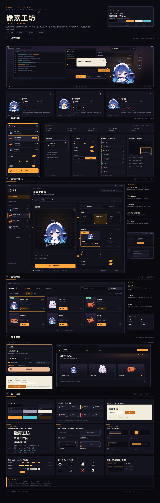
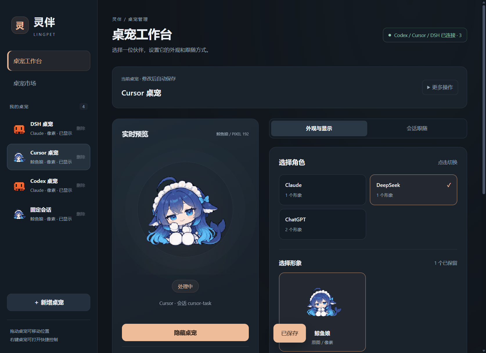
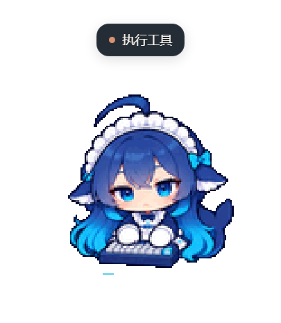
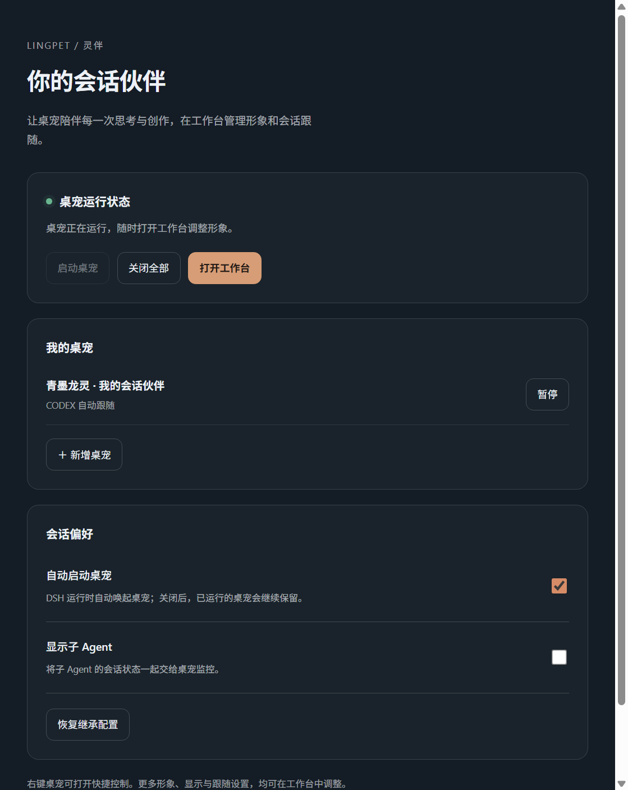
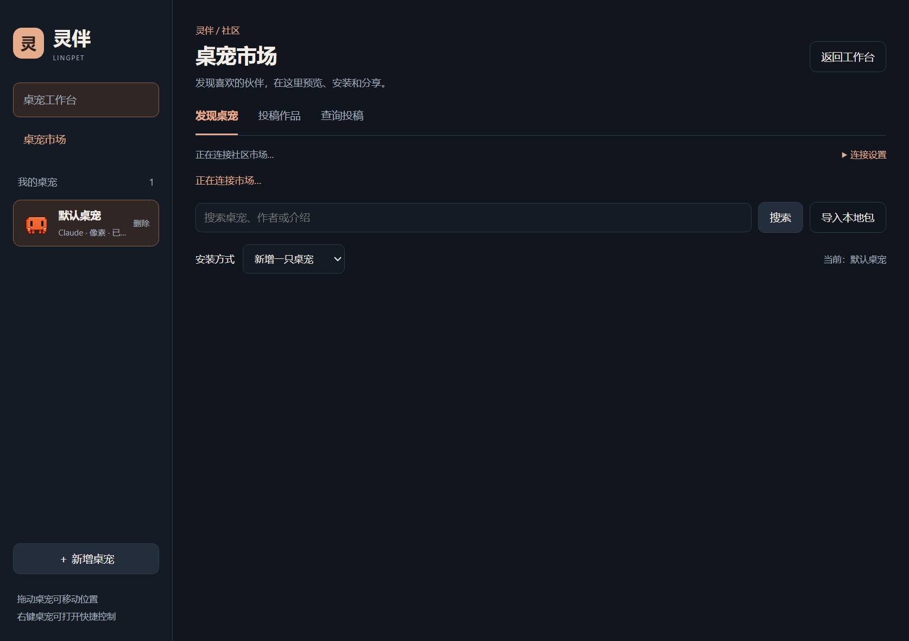
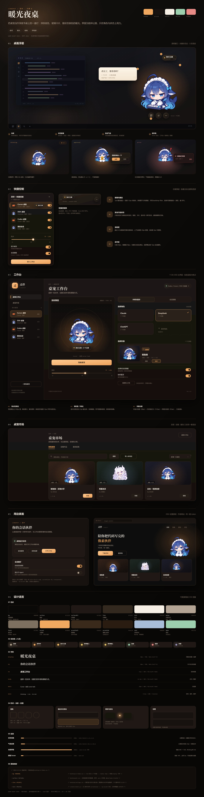
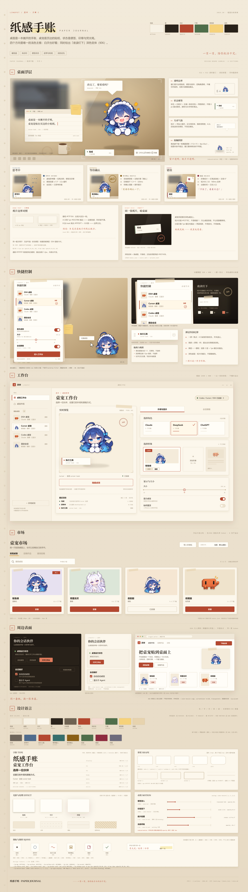
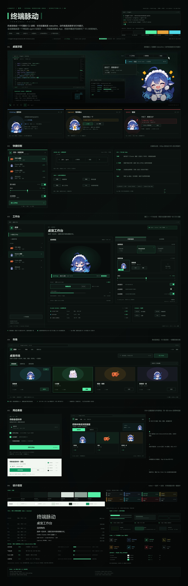

01 PIXEL WORKSHOP

像素工坊PIXEL WORKSHOP
把界面做成一块 8-bit 卡带菜单：2px 硬描边、位移硬投影、0 圆角、steps() 帧动效。角色从「素材」变成「主机里的存档」。
灵伴是一个常驻桌面的像素角色伙伴：它跟着 DSH / Codex / Cursor 的会话切换状态，右键能叫出快捷控制，工作台里挑形象与跟随方式。 现状是一套「通用深色 SaaS 后台 + 暖桃点缀」，界面和像素角色不在同一个世界里。下面四个方案用同一套信息架构，给出四种气质。
改版前的四个主要表面。审计脚本统计了 7 个样式表的 token 离散度。




每个方向都覆盖：桌宠浮层（八态）、快捷控制、工作台、市场、DSH 面板、市场网站，以及一套可落地的 token。

把界面做成一块 8-bit 卡带菜单：2px 硬描边、位移硬投影、0 圆角、steps() 帧动效。角色从「素材」变成「主机里的存档」。



桌宠是一个可爱的 CLI 进程：状态就是 statusline，动作就是进度条与行内提示，荧光色只占 8%。面向天天泡终端的开发者。
详细对比、落地顺序与风险见 README.md；四方案横向拼图见 compare.png。
prefers-color-scheme: light 的一版。